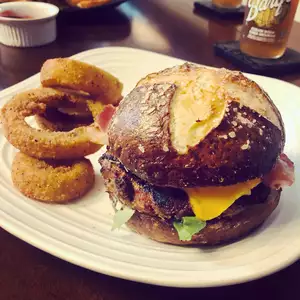

Pretzel Buns

Description
Buns that taste and look like soft pretzels! Not too difficult to make, these buns are great for sandwiches or as a side (especially with steak!). Try them with burgers topped with Swiss cheese and honey mustard!
Ingredients
- 4 ½ teaspoons active dry yeast
- 1 teaspoon white sugar
- ½ cup warm water
- 2 cups warm milk
- 6 tablespoons vegetable shortening
- 2 eggs
- 6 cups all-purpose flour, divided
- 1 tablespoon vegetable oil
- ¼ cup white sugar
- 1 ½ teaspoons salt
- ½ cup baking soda
- 4 cups water
- ¼ cup melted butter
- sea salt
Steps
- Sprinkle the yeast and 1 teaspoon sugar over 1/2 cup of warm water in a small bowl. The water should be no more than 100 degrees F (40 degrees C). Let stand for 5 minutes until the yeast softens and begins to form a creamy foam.
- Add milk, shortening, eggs, oil, 3 cups flour, 1/4 cup sugar, and 1 1/2 teaspoons salt. Blend with an electric mixer on medium speed until smooth. Mix in remaining 3 cups of flour by hand, 1/2 cup at a time, mixing well after each addition. When the dough has pulled together, turn it out onto a floured surface, and knead until smooth and elastic, about 5 minutes. The dough will be sticky.
- Lightly oil a large bowl, then place the dough in the bowl and turn to coat with oil. Cover with a light cloth and let rise in a warm place (80 to 95 degrees F (27 to 35 degrees C)) until doubled in volume, about 1 hour. Uncover the dough and punch it down.
- Preheat an oven to 350 degrees F (175 degrees C).
- Pull off baseball size portions of dough and roll into "snakes" about 6 inches long. Roll each "snake" into a spiral to give the tops some texture. Set each formed bun aside.
- Mix the baking soda and 4 cups hot water in a bowl. The baking soda does not need to dissolve completely. Dip each bun in the baking soda solution before placing on a baking sheet. Brush each bun with melted butter and sprinkle with sea salt. Bake in the preheated oven until brown, 20 to 25 minutes. Cool on a wire rack or brown paper bag.